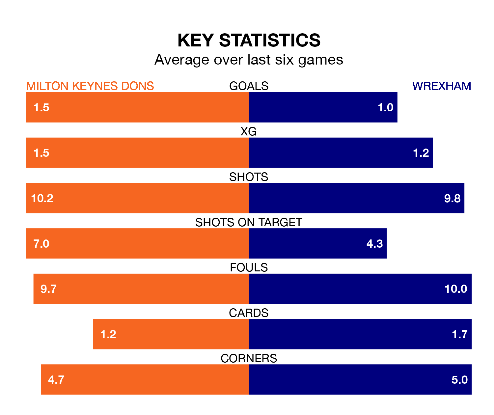

Milton Keynes Dons host Wrexham on Tuesday at Stadium mk in EFL League Two.
In their last league match, on Saturday, Milton Keynes beat Swindon Town 2-1 away, with their goal scored by Stephen Wourne (two).
Wrexham also won, 1-0 at home against Notts County, with Steven Fletcher scoring their goals.
With 58 goals in 31 games so far this season, Wrexham are scoring more than average in the league with 1.9 goals per game. And they are conceding fewer than average, letting in 42 goals at a rate of 1.4 per game.
Milton Keynes are also above average scorers, with 1.6 goals per game, compared to a league average of 1.5. They have conceded 1.3 goals per game.
The Dragons are third in the table after 31 games, of which they have won 17 and drawn seven, earning 58 points.
Dons are two places behind the away team in fifth, with 16 wins and six draws putting them on 54 points.
The Dons are in reasonable form in EFL League Two, with four wins and two losses from their last six games.
With three wins and three losses over that period, Wrexham's form is worse – they have taken nine points from 18, compared to the hosts' 12.
In Elliott Lee, Wrexham have one of the league's most on-form strikers so far this season. He has notched 14 goals in 31 appearances, to sit eighth in the scoring charts.
His goal rate of one every 191 minutes is slightly quicker than that of Max Dean, Milton Keynes's top scorer with a goal every 170 minutes, and a total of nine goals in 22 games.
Updated: 12:18 (UTC), 19/02/24